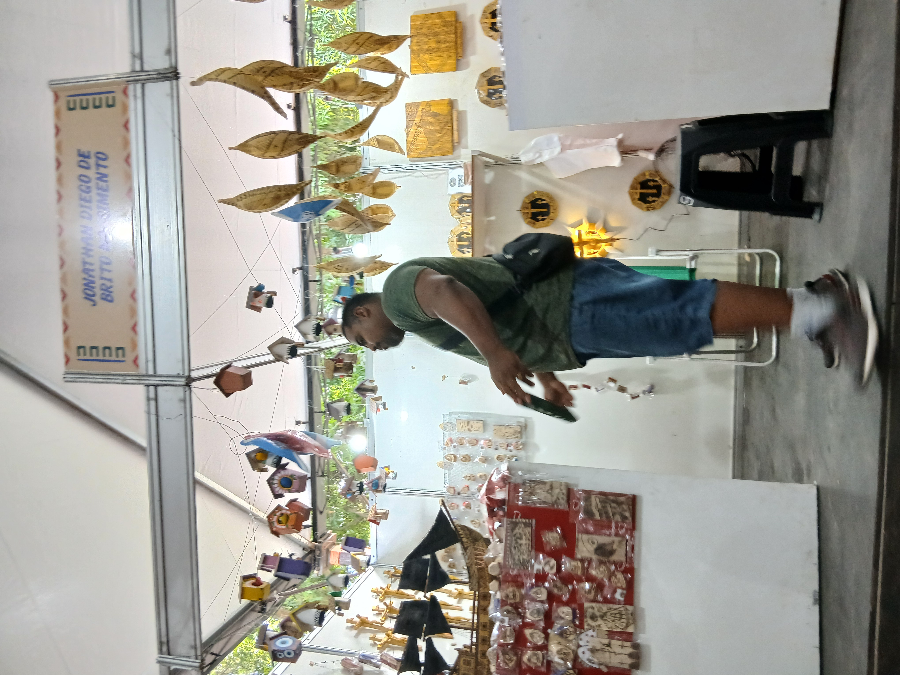
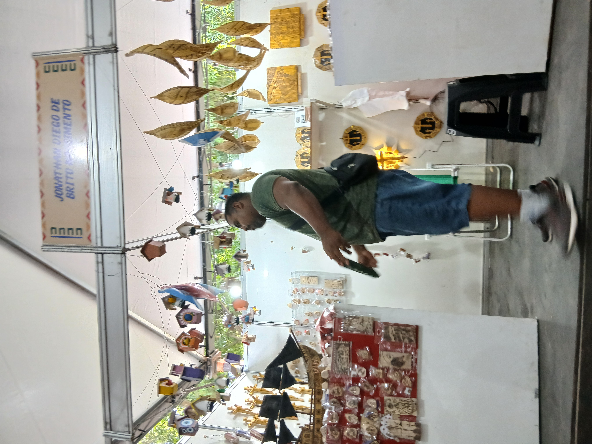
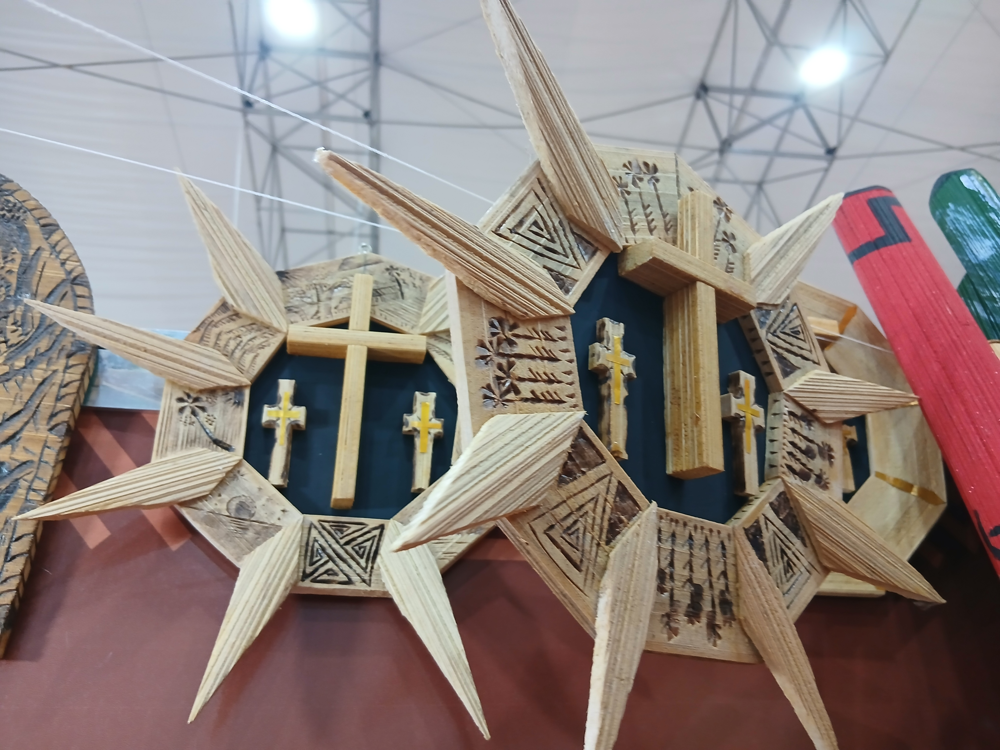
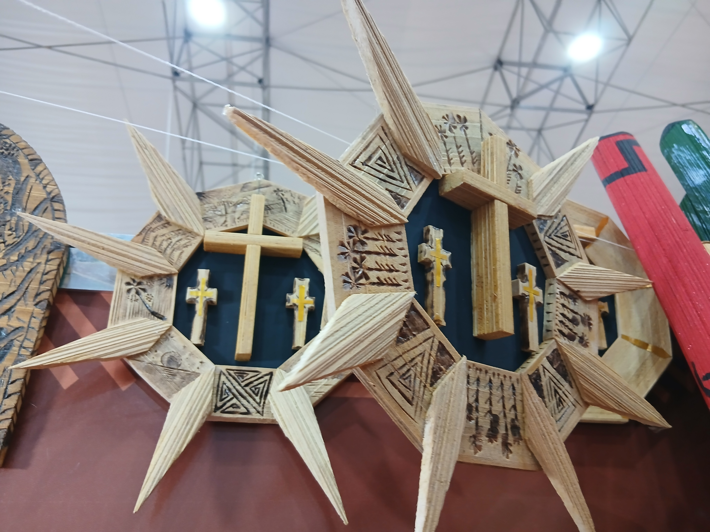
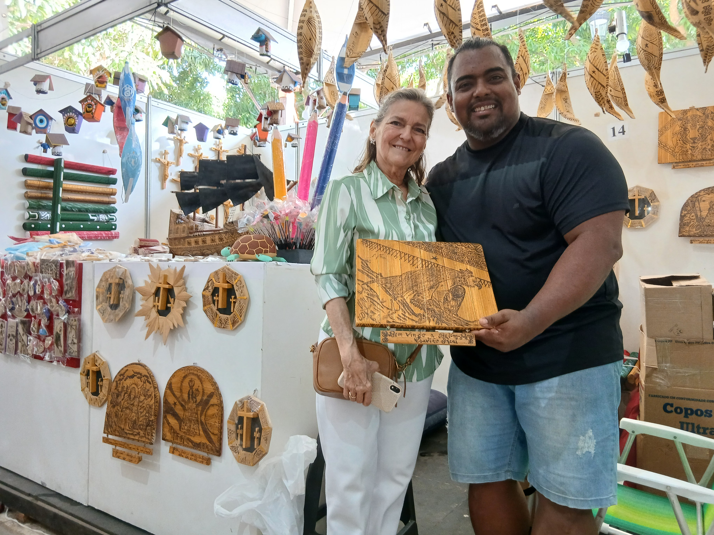
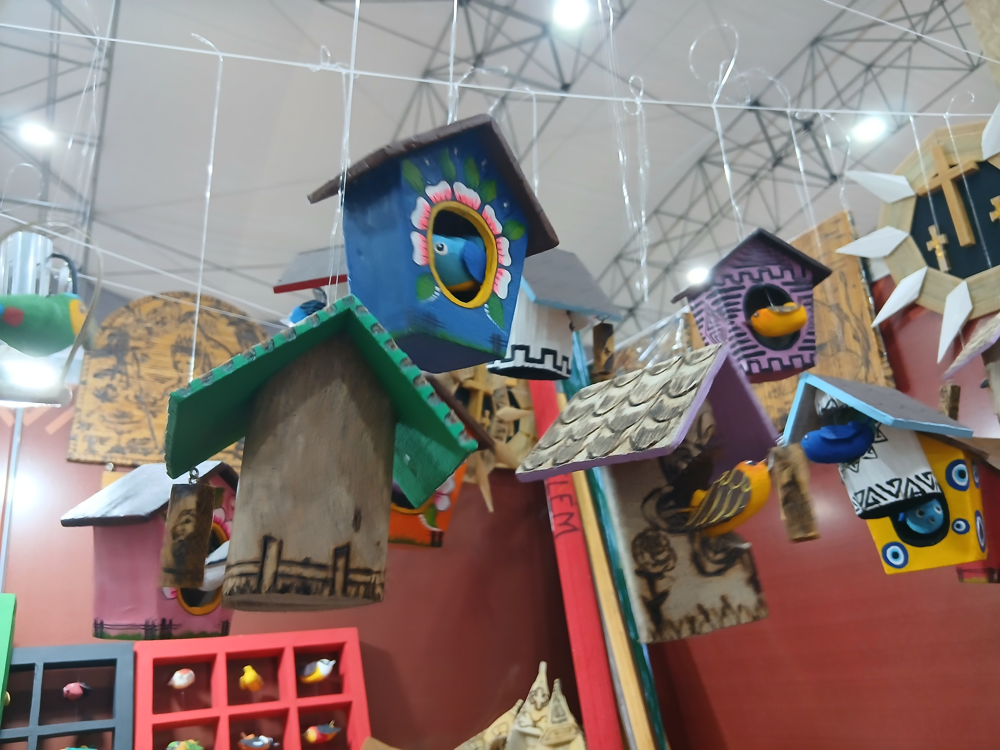
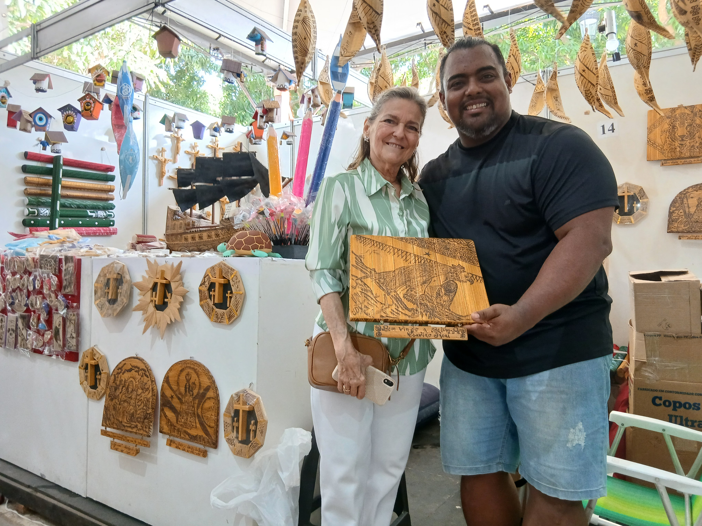
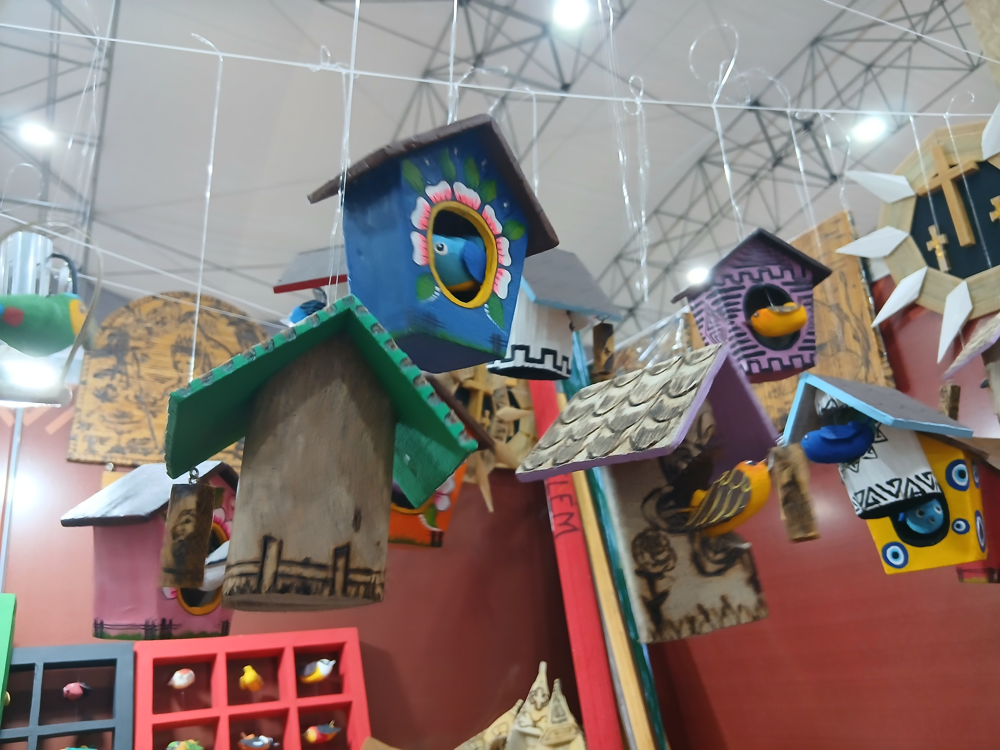
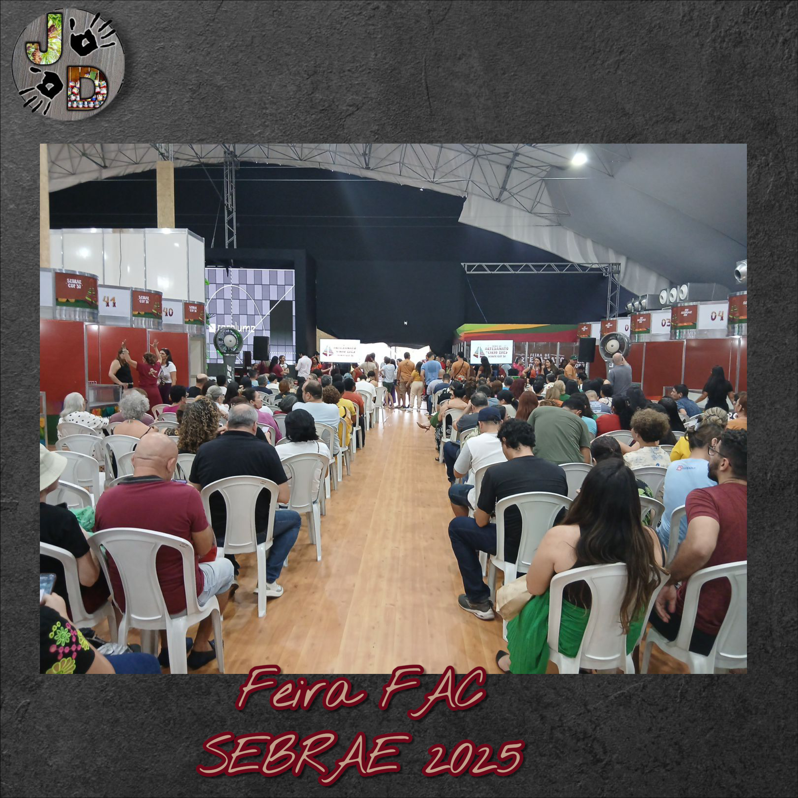
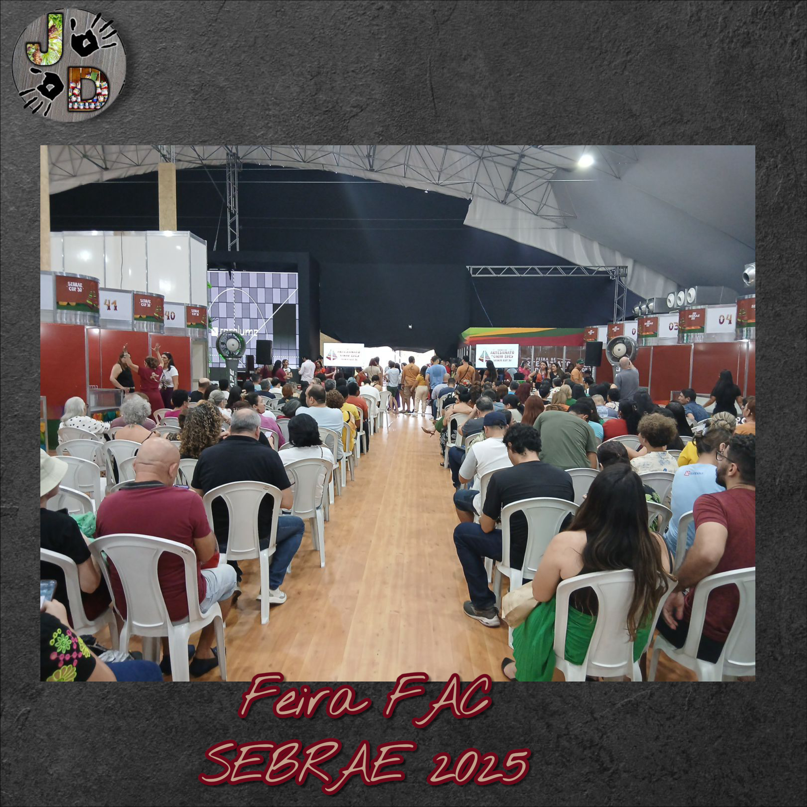

Abaetetuba Vai a Praça 2025
Abaetetuba Vai à Praça: projeto valoriza a cultura e impulsiona a economia criativa do município
A Prefeitura de Abaetetuba, com idealização do Abaetur e coordenação da Secretaria de Administração, promoveu mais uma edição do projeto “Abaetetuba Vai à Praça”. O evento é sempre realizado no primeiro e no terceiro domingo de cada mês, das 8h às 14h.
O Abaetetuba Vai à Praça é um importante evento de valorização da cultura local, onde o artesanato de miriti se destaca como símbolo da identidade de Abaetetuba.
A JD | Arte em Miriti participa do evento como uma das representantes desse artesanato tradicional, levando ao público um trabalho que une tradição e inovação. O ateliê se diferencia pelo uso pioneiro da pirografia na fibra de miriti, técnica artesanal que grava desenhos diretamente no material natural, criando peças únicas e cheias de identidade amazônica.
Além da pirografia, a JD | Arte em Miriti amplia as possibilidades do miriti ao desenvolver novos formatos, como ímãs de geladeira e peças decorativas, mantendo viva a cultura regional em diálogo com a criatividade contemporânea.
Feiras de Artesanato em outubro 2025


 



 


 





 

Feira de Miriti 2025 e Feira de Artesanato do Círio (FAC) 2025
A Feira de Miriti de 2025, promovida pela Fundação Cultural de Abaetetuba, será realizada de 8 a 12 de outubro na Praça Dom Pedro II, em Belém. O evento reunirá a arte tradicional de Abaetetuba durante o Círio de Nazaré, destacando os famosos barquinhos de miriti e outros artesanatos que expressam a identidade e o talento dos artesãos locais. A feira reforça a importância da preservação ambiental e da economia da floresta, conectando cultura, tradição e sustentabilidade.
Já a Feira de Artesanato do Círio (FAC) 2025 acontecerá de 9 a 15 de outubro, no estacionamento do Parque Urbano Belém Porto Futuro. O evento, organizado pelo Sebrae, contará com mais de 100 estandes de artesanato paraense e entrada gratuita. O horário de funcionamento será das 10h às 22h, exceto no dia 12 de outubro (dia do Círio), quando a abertura será às 15h.
A FAC reunirá produtos inspirados no Círio de Nazaré, como cerâmica, miriti, fibras, sementes e joias, celebrando a riqueza cultural e artesanal do Pará. Além disso, o público poderá aproveitar uma área de alimentação, espaço kids, Vitrine Amazônica e uma variada programação musical e cultural.
A Feira de Artesanato do Círio (FAC) é uma iniciativa do Sebrae que tem como objetivo apoiar e fortalecer o trabalho dos artesãos e empreendedores da cultura paraense, promovendo o talento e o empreendedorismo regional durante uma das maiores celebrações religiosas e culturais do Brasil.